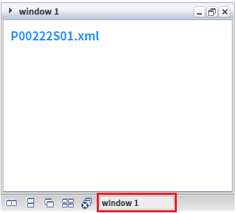
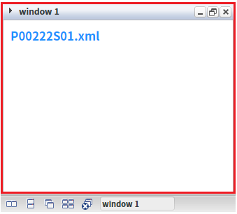
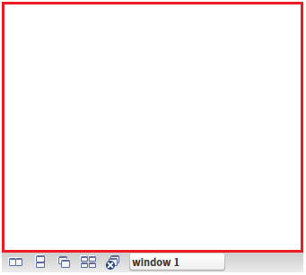
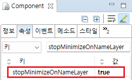

WindowContainer의 'stopMinimizeOnNameLayer' 속성을 'true'로 설정하여 선택된 윈도우의 네임 레이어를 클릭했을 때 윈도우가 최소화되지 않도록 한 예제입니다.
이 속성의 설정 값에 따른 동작은 다음과 같습니다.
false: [default] 네임 레이어를 클릭하면 윈도우가 최소화되거나 최대화됩니다.
true: 네임 레이어를 클릭하면 윈도우가 최소화되지 않습니다.
'stopMinimizeOnNameLayer' 속성을 'true'로 설정
'stopMinimizeOnNameLayer' 속성을 'false'로 설정
예제 영역 'stopMinimizeOnNameLayer: true'에서 테스트합니다.1
STEP 1: 'window 1' 네임 레이어을 클릭합니다.
Image 1.브라우저(Chrome) 실행 예시

2
STEP 2: 실행 결과를 확인합니다.
윈도우가 최소화되지 않습니다.
Image 2.브라우저(Chrome) 실행 예시

예제 영역 '(기본 설정) stopMinimizeOnNameLayer: false'에서 테스트합니다.1
STEP 1: 'window 1' 네임 레이어을 클릭합니다.
Image 3.브라우저(Chrome) 실행 예시
2
STEP 2: 실행 결과를 확인합니다.
윈도우가 최소화되어 화면에 표시되지 않습니다.
Image 4.브라우저(Chrome) 실행 예시

1
WindowContainer의 속성을 정의합니다.
[필수] stopMinimizeOnNameLayer="true"
(옵션 설명)
- false: [default] 네임 레이어를 클릭하면 윈도우가 최소화되거나 최대화됩니다.
- true: 네임 레이어를 클릭하면 윈도우가 최소화되지 않습니다.
Image 5.웹스퀘어 스튜디오의 Component View 예시

Example 1.Source
<!-- windowContainer 의 소스 본문 예시 --> <w2:windowContainer stopMinimizeOnNameLayer="true"> <!-- 중략 --> </w2:windowContainer>
stopMinimizeOnNameLayer